Note: Due to the scarcity of pokewalkers, Part 1 is optional. You do NOT need a pokewalker pokemon to find your SID with this process, but it helps.
So, you’re here to obtain your Secret ID (SID), are ineligible for the group seed method, don’t have a self obtained wild-caught shiny, and are unable or unwilling to consult third party tools? Luckily, there may still be a chance for your save file. The general process is to obtain a chained or forced shiny pokemon (HGSS gyarados or a pokeradar shiny in DPPt, same method) and if possible a Pokewalker pokemon (either a pokemon directly from the Pokewalker, or spiky-eared pichu, which is generated through the same means as a Pokewalker pokemon), feed them specific blends of apricorn juice, and obtain an SID in otherwise impossible circumstances. Well, finding the PID of a shiny Pokemon is nearly equivalent to finding the SID of the original trainer.
To be more specific (feel free to skim through this if you don’t care), shiny pokemon generate when the Pokemon Shiny Value (PSV) of pokemon’s PID is equivalent to a trainer’s Trainer Shiny Value (TSV). The TSV of a save file can be represented by the following equation.
Now ^ isn’t exactly important here, bitxor checks for differences in binary bits (and is pretty similar to subtraction), but the >> in this equation represents “bitrshift”, in which the bits of the number, or the digits of the number in binary, are shifted to the right by the following number. As a result, the last 3 bits are lost in the process. In other words, no matter what those 3 bits were, the TSV will be the same, meaning essentially that there are 8 SID values that, when combined with your TID, will yield the same TSV. Interestingly, the Pokewalker uses a similar calculation with the TID and SID to prevent the PSV from matching the TSV, by creating a PID using the TID and SID.
This value, which I dub the “Mini TSV” (MTSV), is simply a TSV with 8 lost bits instead of 3. This MTSV will then be input to create a basis for all Pokewalker PIDs with the formula below.
So by finding the PID of the pokemon you catch in the Pokewalker, you can reverse engineer your “Mini TSV”, and even get a good guess as to where your SID is, though you won’t be able to determine the last 8 bits with a MTSV alone. For each MTSV, there are 32 unique TSVs, and 256 unique SIDs. Most methods for finding “SID” in DPPt/HGSS only find the TSV, and provide one of the 8 valid SIDs for that TSV, but having the exact SID is essential for determining Square Shininess when transferring pokemon forward to Sword and Shield. To be any more exact than a MTSV, you actually need a shiny of some kind, and obtain either the full PID, or the PSV of that shiny. The easiest type of shiny to obtain is a chained shiny, either the HGSS always-shiny gyarados, or any Pokeradar chained-shiny in DPPt. Chained shinies are created in a manner that “forces” them to become shiny, using the formula below.
In this formula, “LID” refers to the joining of the least significant bit from each of the 13 LCRNG calls between the PID and the IVs. PIDmethod 1 is the initial PID selected before those 13 calls. Anything that does not directly involve the TSV is easy to reverse, as almost the entire LCRNG state can be recovered from the IVs alone. This might seem complicated, but the chained PID formula essentially boils down to known and unknown bits, shown in the below visualization.
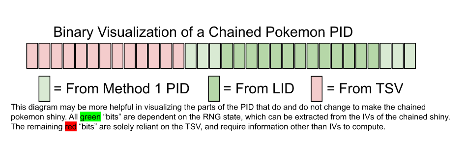For traditional methods of finding SID, a chained shiny cannot be used because the PID is altered by the TSV directly. However, if through some means you could obtain the remaining red bits of a chained shiny PID, or narrow down the number of possibilities significantly, the save file’s TSV could be calculated, which could be used to reverse possible SID values.
The current method for finding the relevant/unknown bits of the PID of both Pokewalker Pokemon and Chained Shinies is through aprijuice. For each pokemon, the process requires 2-5 specific aprijuice recipes, depending on species, nature, and hidden PID digits. You will need roughly 10-40 apricorns per pokemon. The sheet will attempt to minimize the number of apricorns you end up needing, but should you run out of an apricorn type you need, this link can be used to find out which trees you can obtain more at. After collecting an apricorn type at all available trees, you can boot up the game by setting the DS clock to 23:59, (this way you have 1 minute to boot up the game, and wait for midnight to hit) then let the clock roll over to regenerate apricorn trees. This method of being ingame while midnight happens is a way to circumvent the game taking countermeasures for foul play with date/time, and it works for nearly everything in gen 4.
So, what *is* Apricorn Juice, and what could it possibly have to do with finding PIDs of pokemon? According to Bulbapedia, Aprijuice can be created by blending apricorns in an Apriblender, and when consumed by Pokemon, boost Pokeathlon “Performance” stats dependent on the types of Apricorns in the blend. However, Aprijuice is not the only contributing factor to a Pokemon’s Performance stats. As stated by Bulbapedia, a Pokemon’s nature has a pronounced effect on it’s Performance stats, but the last 5 decimal digits of the Pokemon’s Personality Value (More commonly referred to as a “PID”) apply a more subtle effect that fluctuates depending on the numerical day of the month.
While it would be all too convenient to analyze Performance stats to reverse these digits of the PID, much in a similar manner that one would analyze the stats of a pokemon to determine it’s IVs, Performance stats are not displayed numerically. Rather, these modifiers are expressed by a number of stars, with a min, base, and max value for each species of pokemon.
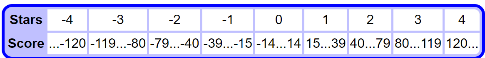So, to properly match the minute day-of-month fluctuations in a Pokemon’s performance to a digit of that pokemon’s PID, extremely specific aprijuice modifiers must be applied, so that a difference in stars can be observed and tracked. Upon the conclusion of this “Aprijuice Analysis,” we know the following about a PID.
K is a value from 0 to 99999, and “%” (modulo) means “find the remainder when dividing by ___”. So we can obtain a list of possible PIDs by adding increments of 100000 to this K value, and filter that list of PIDs using other PID-dependent traits such as gender/ability, as well as known bits from the generation method of chained-shiny PIDs or Pokewalker PIDs.
An optional part of this process is obtaining the “Mini TSV” of your save file. Completing this step will save time in the long run, saving up to 5 wild RNGs of effort. However, if you do not have a pokemon from a Pokewalker connected to your save file, and do not have a self-obtained spiky-eared pichu, skip to Part 2, as you are unable to complete this component of the process. If you have a Pokewalker and can still catch pokemon using it, you should carefully consider which pokemon you use. This choice of pokemon is extremely important, as some pokemon have pokeathlon stats that make finding digits of their PID impossible. You can find the full Pokeathlon Stats of a pokemon using psypokes, this site. Below are the stats for Kangaskhan.
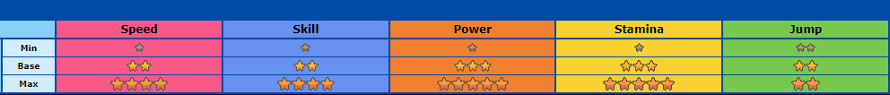Kangaskhan would be a poor choice for this process because of its Jump Stat. It has a Min Jump of 2, a Base Jump of 2, and a Max Jump of 2. Because it cannot be raised nor lowered, no information about its PID can be extracted from it, making it a terrible choice for Mini TSV Calculation. Now let’s take a look at Duskull’s Pokeathlon Stats.
As you can see, Duskull starts with 4 Speed, and cannot have more than 4 Speed. It can have less than 4 Speed though, so the speed PID digit can be found, though it will require more apricorns and aprijuice to do so. I will be using duskull in this example for demonstrational purposes, as some segments of this guide are only applicable in rare circumstances, but this duskull will check every box. You should consider using a pokemon like Sentret instead, which is much less likely to run into the issues Duskull will have. These are Sentret’s Pokeathlon Stats.
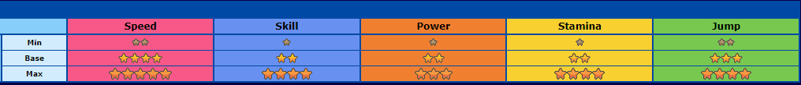As you can see, there is an upper and lower range for all 5 pokeathlon stats. This allows for cheaper recipes, and less aprijuices, to get the data needed to find PID. Anyway, once you have selected your pokemon (your pokemon is Spiky-Eared Pichu if you are using Spiky-Eared Pichu), open up my google sheets tool, and navigate to Aprijuice Species Data. Luckily for you, thegreenkacheek already completed this process for all pokemon in the base gen 4 games, but if you are doing this on a ROM hack of some kind, you might need to input the Min, Base, and Max Pokeathlon stats of your pokemon, as well as its gender ratio.
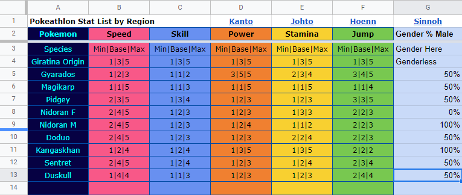This should be done in the format “Min|Base|Max”, and the gender ratio should be in the chance of being Male. You may need to find these base star values experimentally if psypokes does not have them listed. With that out of the way, it’s time to start this process.
Now then, navigate to the Aprijuice to SID User Input sheet, and scroll to the far left. Make sure you keep track of which table you are at. While they may look similar, the top left corner of each table displays which segment of the guide it relates to, and is color coded. On the far left, beneath Pokewalker Pokemon, input the nature, gender, and species of the Pokemon you caught. It should look something like this.
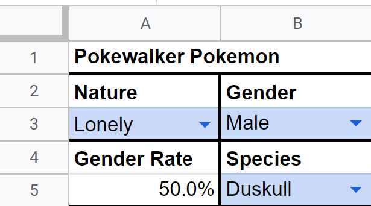My pokemon is a Male Duskull, with a Lonely Nature. Now that the sheet knows this, we can start plugging in star values. Pokeathlon stats fluctuate based on the day of the month. While these fluctuations are not strong enough to change star values on their own, they can make the difference between 2 or 3 stars when factors such as nature and aprijuice are applied. So the next step will be to set your DS clock to January 1st of any year (or February 1st, March 1st, April 1st, etc. The month does not matter), and boot up the game.
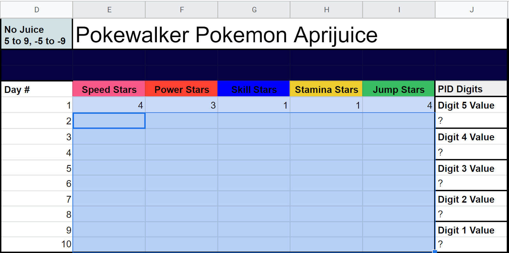Ensure you are on the Pokewalker Pokemon Aprijuice row, and that the top left corner says No Juice 5 to 9, -5 to -9. View the summary of your caught pokemon, and input the number of Speed, Power, Skill, Stamina, and Jump stars for your pokemon in the sheet. If the third page of the pokemon’s summary has no stars, you must visit the pokeathlon dome for the first time. Once you have correctly input these stats, power off your game, change the date to January 2nd, and input the stats for day 2. Continue this process all the way to January 10th. Odds are, you’re seeing some numbers highlighted in green or red, which are fluctuations in star counts. If this is the case, you should read this for info on how to blend aprijuice, but you may not need to make any juice until Juice B. However, if you chose a pokemon like duskull and/or got unlucky with nature, you might see something like this instead.
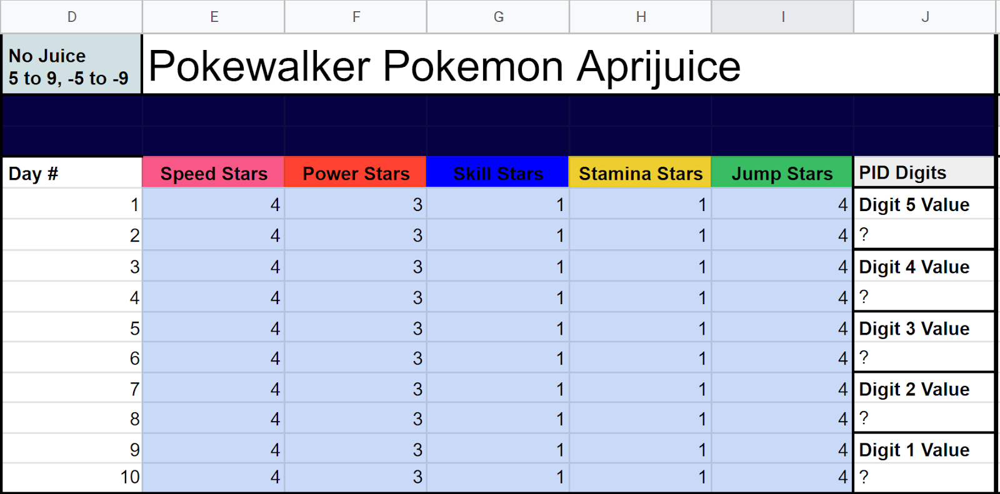Unfortunately, because Lonely raises power by 2 stars (above Duskull’s maximum) and lowers Stamina by 2 (below Duskull’s minimum), the fluctuations are not displayed in game. Sentret is less likely to have this issue, though it is technically possible for any pokemon without a neutral nature. When this occurs, an aprijuice needs to raise/lower the affected stats back above the minimum, or below the maximum, so fluctuations can be seen. Once you input all 10 days, an optimal recipe will be selected in above the Juice A table to the right, which uses as few apricorns as possible.
The recipe displays the number of apricorns required, the order they need to be put into the blender, and their “Mildness”. If you do not have enough apricorns to complete the recipe, do not start until you have gathered the ones you are missing. This recipe requires 1 Black, 6 Pink, 4 Yellow, and 1 White Apricorn. The Apricorn Sequence Required displays the order that these apricorns need to be added, which is important to getting the right stats. The “|” throughout the sequence represents where the blender will require the player to walk 100 steps before adding more apricorns. It does this each time you add 5 apricorns, so make sure you keep track of how far you’ve gotten. A list of all recipes the sheet can pull from is included in Aprijuice Recipes. “Mildness” is increased by 1 for every 100 steps the player walks, and only affects the juice in increments of 25. The game will explicitly tell you how mild your juice is whenever you scroll over the apriblender itself. Under certain circumstances, Mildness does not matter for a recipe, and obviously it would be a waste of time to walk all those steps if it isn’t necessary. When Mildness is not needed for a recipe, you will see a mildness range of 0-255, which means any mildness is acceptable. According to the sheet, I need a Mildness of 100-124 for this recipe, meaning I need to walk ~100,000 steps to blend the juice, after putting all the apricorns in. You may need to walk more or less for other recipes. While this is a lot of steps, there are a few good ways of tackling it. Cycling road is nice and long, if you don’t mind holding up periodically. However, there is a way to walk infinitely in HGSS. By entering the Ecruteak Gym and holding the up arrow (or using a coin of some sort for a 3ds) you can fall into the void infinitely, respawn, and walk back up endlessly. This is slower than just riding your bike, but it is infinite. Just make sure you don’t walk for too long, this will ruin your juice. You can check it at any time by opening your apricorn box and scrolling over the juice. Once you’ve finished biking a marathon or repeatedly falling into the abyss to get the right mildness, feed the juice to your pokemon, and save the game. On your sheet, scroll over to the next table, which should be labeled Juice A. If you didn’t need to make aprijuice yet, simply copy over the stats from No Juice, but if you had to blend an aprijuice, you’ll have to input the stats for days 1-10 again, this time with the aprijuice modifier. These are my duskull’s stars.
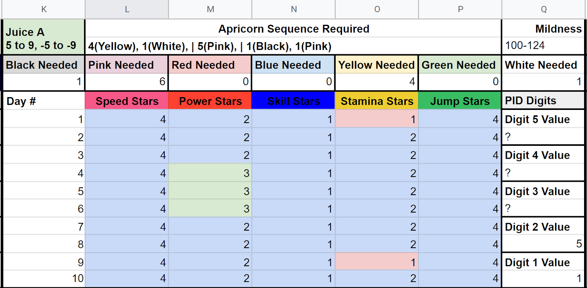Now you should have two digits displaying, but if you don’t by this point, it means you either made a mistake inputting Stars, or you have a rare case where your Juice A doesn’t have a recipe yet. Either way, you’ll need to start over, potentially with a different pokemon. Anyway, assuming you get here, you should have two PID digits already. In the above example, my last two digits are 5 and 1 respectively. You may have 3 digits known at this point, as power can be found using stamina and nature. Anyway, your next step is to blend the aprijuice displayed above Juice B.
Like before, you need to ensure that you have enough apricorns before you begin, follow the sequence exactly, and reach the correct mildness if required.
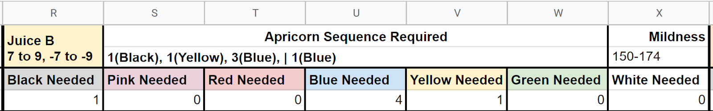In this case, I need 1 black, 4 blue, and one Yellow, as well as 150k steps. Before you start blending, make sure you get rid of your last blend by feeding what’s left of it to other pokemon. A pokemon can only be influenced by 1 juice at a time, (and will lose the effect of any juice if deposited into the PC) but the new and old juices will combine in the blender if you aren’t careful. This may be the last (and only) apriblend, if you got an easy PID. Add the apricorns in the correct order, bike the needed steps, feed the juice to your pokemon, save, then punch your star data for days 1 to 10 like before into the sheet under Juice B. You are very likely to see a variation in at least one of the unknown stats, but this Duskull has an intentionally difficult PID to deduce for the sake of example.
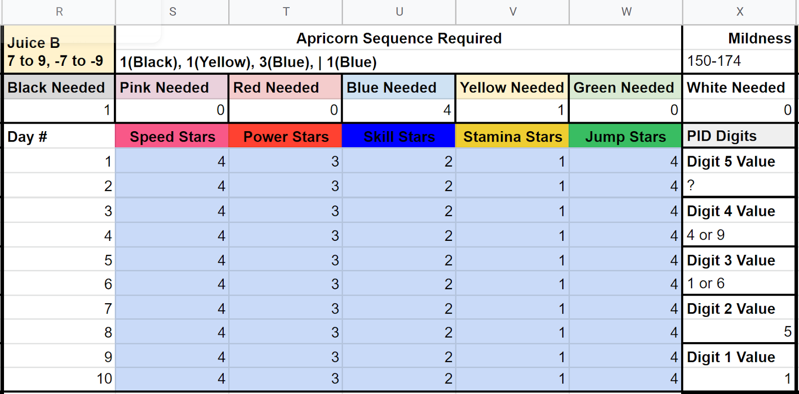You may be wondering what that “7 to 9” is about on the top left. Essentially, the hidden stat value for each stat fluctuates between -9 and 9, and this juice will cause a star increase on “7 to 9” for stats that increase, and will cause a star decrease on “-7 to -9” on the stat that decreases. A “5-9” would be optimal in distinguishing PID digits from each-other, but that type of juice is either extremely expensive, or impractical for other reasons. Both “7 to 9” and “3 to 9” juices can potentially create “lookalike digits”, which have identical star patterns to each other, despite being different values. This happened to my Duskull, as an unchanging star value for an increased stat is indicative of either 1 or 6, as shown above.
At this point, you may have “Half Known” digits, or know all 5 digits already. If all 5 digits are known, you don’t need to do any more work. Scroll ahead to Juice E in this guide, you already found your PID and Mini TSV. That said, if you have a half known digit, or worse a “?” like I do, you will need to complete the next recipe, just like you did before.
So, collect missing Apricorns, empty the old juice, follow the prescribed order, then take enough steps for the correct mildness, if necessary. Once you do, feed it to your pokemon, and save your game. Like before, copy the star counts in for days 1-10 with the new juice. You should see at least one star count fluctuate this time, if you did everything correctly.
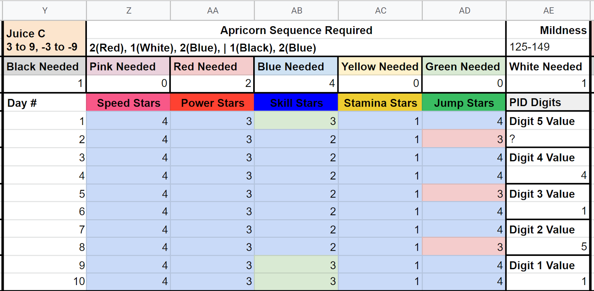At this point, you are highly likely to find all 5 digits, because there is no overlap between lookalike digits for 3-9 and 7-9. If you have, skip to Juice E to claim your Mini TSV. However, if you had a ? as one of your digits, like I did for this extremely improbable duskull, you may need to make more juice.
Once again, go through the motions of collecting the necessary apricorns, emptying out residual juice, blending your concoction, and walking the necessary steps, if mildness is not 0-255. Unfortunately, my duskull needs the minimum speed from this juice, but you are much more likely to not need mildness on this blend, if you need it at all. Once you have the proper mildness, feed the completed juice to your pokemon, and save the game. Then, input your pokemon’s performance stats for days 1-10 of the month into the sheet. You are highly likely to see a variation in your missing stat, however...
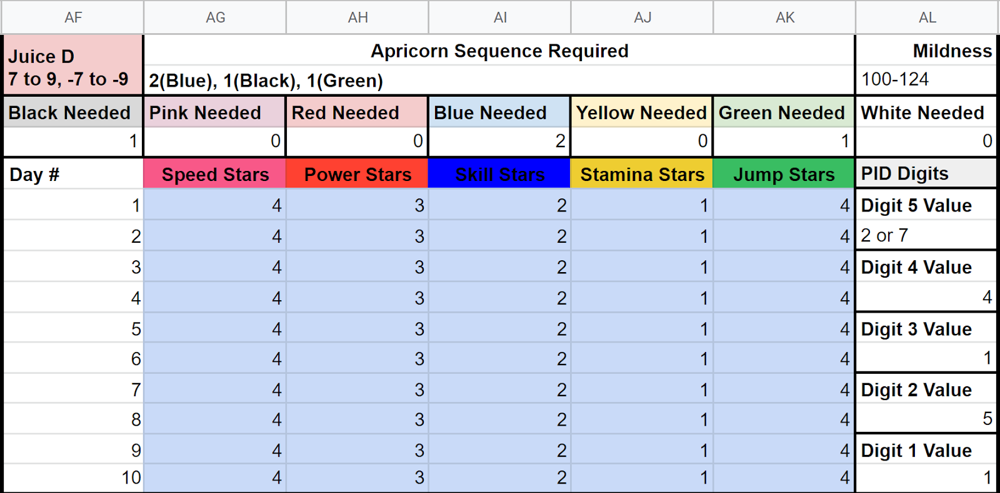Because this is another 7 to 9 juice, there is a chance for lookalike digits, and this duskull has one of them. My Speed digit is either a 2 or a 7, as shown above. If you happened to get all 5 digits, you don’t need to blend anything else. Head over to Juice E in the guide to find your Mini-TSV. However, because I still have a half-known digit, I have one more recipe to do.
For the final time, empty your residual aprijuice, collect any missing apricorns, complete the recipe in the order given, and if needed, walk enough steps for the desired mildness. Once you do, give the juice to your pokemon, and save the game. Finally, input stats for days 1-10, just as you did for all other juices so far.
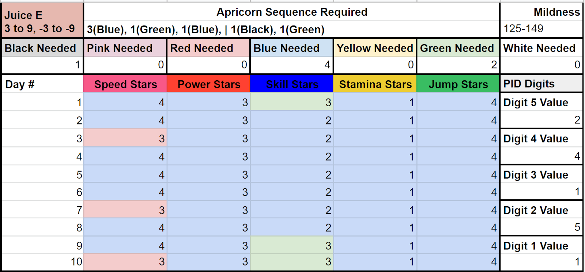Feel free to leave this blank if you have all 5 digits already. Anyway, by this point, you should have all 5 digits. If not, you made a mistake somewhere along the line, and will need to start over. After that final juice, I have 5 known digits of my Duskull’s PID, which means the sheet now has enough info to calculate Duskull’s PID on the far left of the sheet.
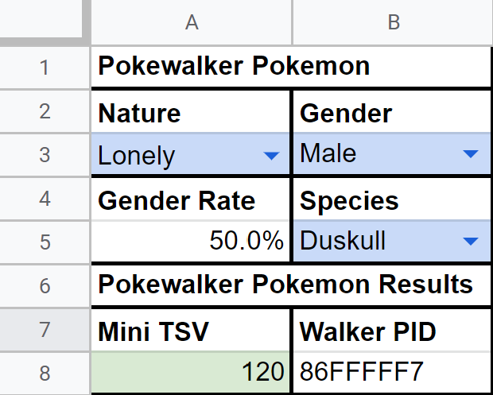Your Mini-TSV is highlighted in green, and in this case mine is 120. For the next step, scroll down to the chained shiny segment of the user sheet, where you will be repeating this process near-exactly for your chained shiny! woohoo!
The Chained Shiny part of this process is extremely similar to the previous part, with a few key differences. The first of which is that you will need to find the exact IVs of your chained shiny. This guide will not cover the process of obtaining the IVs of a pokemon, though many guides and tools exist for this exact purpose. If your chained shiny has gained EVs, you will need to obtain EV reducing berries to find accurate IVs. 4 of the 6 berries can be obtained from the Shard de Berry juggler in Fuchsia City, and all 6 can be obtained from scratch-off ticketsin the battle frontier. Navigate to the Aprijuice to SID User Input Sheet, and input your pokemon’s nature, gender, species, HP IV, Attack IV, Defense IV, Special Attack IV, Special Defense IV, and Speed IV. For the sake of example, I will be using a lonely female “Red Gyarados”, with the IVs 0/1/15/25/5/3.
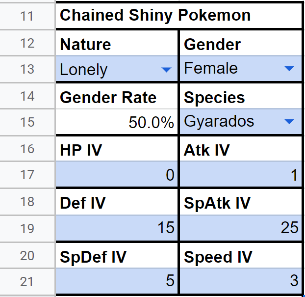Regardless, once you input this information, you can begin finding your Chained Shiny’s PID in the Chained Shiny Pokemon Aprijuice Table. Next, set your DS clock to January 1st of any year (or February 1st, March 1st, April 1st, etc. The month does not matter), and boot up the game.
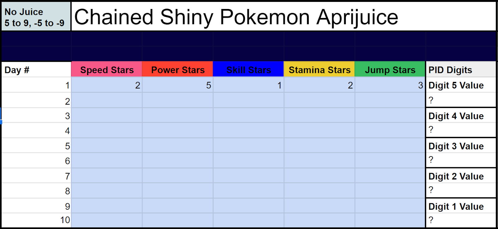You will then view your chained shiny pokemon’s summary, and count the number of stars in each of its pokeathlon stats. If the third page of the pokemon’s summary has no stars, you must visit the pokeathlon dome for the first time. Once you complete your first row, power off the game, set the date to January 2nd, and obtain the star counts for January 2nd to 10th. Once you finish, you should see some of your stats fluctuate. If you see fluctuations in two stats, you should keep reading for info on how to blend aprijuice, but you may not need to make any juice until Juice B in the guide. However, if you got unlucky with nature, you might see something like this instead.
Unfortunately, because Lonely raises power by 2 stars (above Gyarados’ maximum) and lowers Stamina by 2 (below Gyarados’ minimum), the fluctuations are not displayed in game. When this occurs, an aprijuice needs to raise/lower the affected stats back above the minimum, or below the maximum, so fluctuations can be seen. Once you input all 10 days, an optimal recipe will be selected in above the Juice A table to the right, which uses as few apricorns as possible
The recipe displays the number of apricorns required, the order they need to be put into the blender, and their “Mildness”. If you do not have enough apricorns to complete the recipe, do not start until you have gathered the ones you are missing. This recipe requires 1 Black, 7 Pink, 4 Yellow, and 1 White Apricorn. The Apricorn Sequence Required displays the order that these apricorns need to be added, which is important to getting the right stats. The “|” throughout the sequence represents where the blender will require the player to walk 100 steps before adding more apricorns. It does this each time you add 5 apricorns, so make sure you keep track of how far you’ve gotten. A list of all recipes the sheet can pull from is included in Aprijuice Recipes. “Mildness” is increased by 1 for every 100 steps the player walks, and only affects the juice in increments of 25. The game will explicitly tell you how mild your juice is whenever you scroll over the apriblender itself. Under certain circumstances, Mildness does not matter for a recipe, and obviously it would be a waste of time to walk all those steps if it isn’t necessary. When Mildness is not needed for a recipe, you will see a mildness range of 0-255, which means any mildness is acceptable. According to the sheet, I need a Mildness of 0-24 for this recipe, meaning I don’t need to walk far for this particular recipe, anything below 2400 steps will do, as long as all the apricorns are in the blend. You may need to walk more for other recipes. While this isn’t a lot of steps, some recipes may require 100k+ steps, and there are a few good ways of tackling those. Cycling road is nice and long, if you don’t mind holding up periodically. However, there is a way to walk infinitely in HGSS. By entering the Ecruteak Gym and holding the up arrow (or using a coin of some sort for a 3ds) you can fall into the void infinitely, respawn, and walk back up endlessly. This is slower than just riding your bike, but it is infinite. Just make sure you don’t walk for too long, this will ruin your juice. You can check it at any time by opening your apricorn box and scrolling over the juice.
Once you’ve finished biking a marathon or repeatedly falling into the abyss to get the right mildness, feed the juice to your pokemon, and save the game. On your sheet, begin entering stars into your next table. If you didn’t need to make aprijuice yet, simply copy over the stats from No Juice, but if you had to blend an aprijuice, you’ll have to input the stats for days 1-10 again, this time with the aprijuice modifier. These are my Gyarados’ stars.
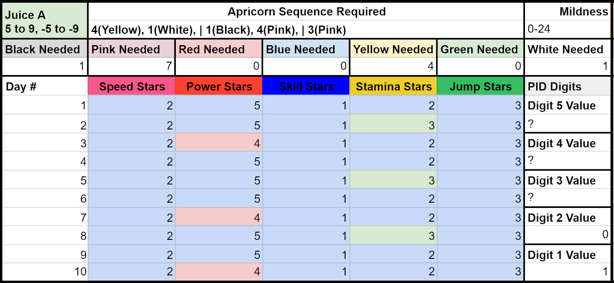Now you should have two digits displaying, but if you don’t by this point, it means you either made a mistake inputting Stars, or you have a rare case where your Juice A doesn’t have a recipe yet. Either way, you’ll need to start over, potentially with a different pokemon. Anyway, assuming you get here, you should have two PID digits already. In the above example, my last two digits are 5 and 1 respectively. You may have 3 digits known at this point, as power can be found using stamina and nature. Anyway, your next step is to blend the aprijuice displayed above Juice B.
Like before, you need to ensure that you have enough apricorns before you begin, follow the sequence exactly, and reach the correct mildness if required.
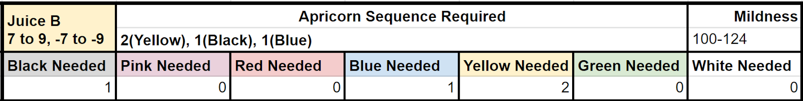In this case, I need 1 black, 1 blue, and 2 Yellow, as well as 100k steps. Before you start blending, make sure you get rid of your last blend by feeding what’s left of it to other pokemon. A pokemon can only be influenced by 1 juice at a time, (and will lose the effect of any juice if deposited into the PC) but the new and old juices will combine in the blender if you aren’t careful. This may be the last (and only) apriblend, if you got an easy PID. Add the apricorns in the correct order, bike the needed steps, feed the juice to your pokemon, save, then punch your star data for days 1 to 10 like before into the sheet under Juice B. You are very likely to see a variation in at least one of the unknown stats, but this Gyarados has an intentionally difficult PID to deduce for the sake of example.
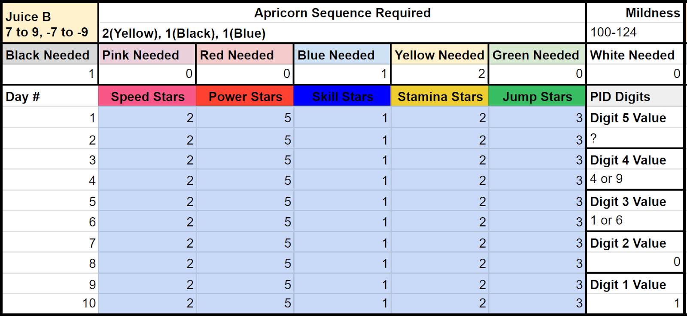You may be wondering what that “7 to 9” is about on the top left. Essentially, the hidden stat value for each stat fluctuates between -9 and 9, and this juice will cause a star increase on “7 to 9” for stats that increase, and will cause a star decrease on “-7 to -9” on the stat that decreases. A “5-9” would be optimal in distinguishing PID digits from each-other, but that type of juice is either extremely expensive, or impractical for other reasons. Both “7 to 9” and “3 to 9” juices can potentially create “lookalike digits”, which have identical star patterns to each other, despite being different values. This happened to my Gyarados, as an unchanging star value for an increased stat is indicative of either 1 or 6, as shown above.
At this point, you may have “Half Known” digits, or know all 5 digits already. If all 5 digits are known, you don’t need to do any more work. Scroll ahead to Juice E in this guide, you already found your PID and Mini TSV. That said, if you have a half known digit, or worse a “?” like I do, you will need to complete the next recipe, just like you did before.
So, collect missing Apricorns, empty the old juice, follow the prescribed order, then take enough steps for the correct mildness, if necessary. Once you do, feed it to your pokemon, and save your game. Like before, copy the star counts in for days 1-10 with the new juice. You should see at least one star count fluctuate this time, if you did everything correctly.
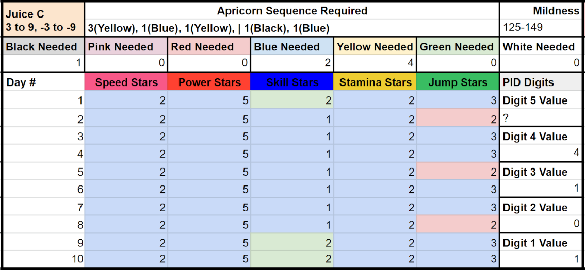At this point, you are highly likely to find all 5 digits, because there is no overlap between lookalike digits for 3-9 and 7-9. If you have, skip to Juice E to claim your Mini TSV. However, if you had a ? as one of your digits, like I did for this extremely improbable Gyarados, you may need to make more juice.
Once again, go through the motions of collecting the necessary apricorns, emptying out residual juice, blending your concoction, and walking the necessary steps, if mildness is not 0-255. Unfortunately, my Gyarados needs the minimum speed from this juice, but you are much more likely to not need mildness on this blend, if you need it at all. Once you have the proper mildness, feed the completed juice to your pokemon, and save the game. Then, input your pokemon’s performance stats for days 1-10 of the month into the sheet. You are highly likely to see a variation in your missing stat, however...
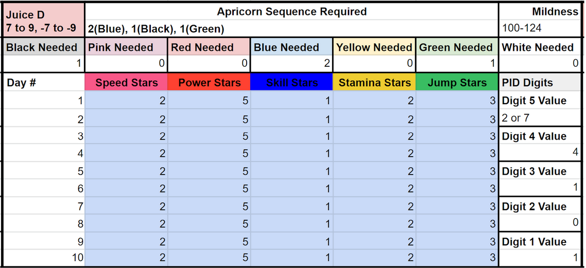Because this is another 7 to 9 juice, there is a chance for lookalike digits, and this Gyarados has one of them. My Digit 5 is either a 2 or a 7, as shown above. If you happened to get all 5 digits, you don’t need to blend anything else. Head over to Juice E in the guide to find your Mini-TSV. However, because I still have a half-known digit, I have one more recipe to do.
For the final time, empty your residual aprijuice, collect any missing apricorns, complete the recipe in the order given, and if needed, walk enough steps for the desired mildness. Once you do, give the juice to your pokemon, and save the game. Finally, input stats for days 1-10, just as you did for all other juices so far.
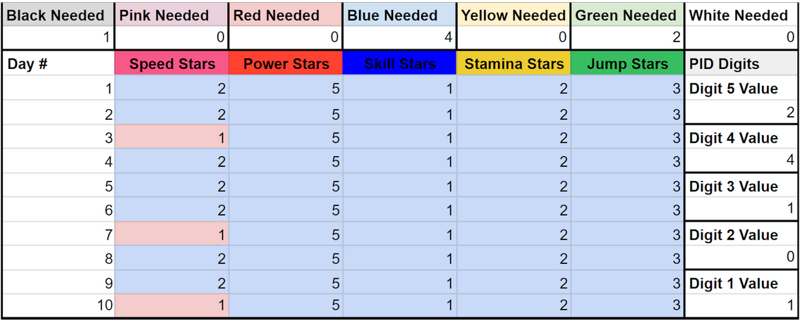Feel free to leave this blank if you have all 5 digits already. Anyway, by this point, you should have all 5 digits. If not, you made a mistake somewhere along the line, and will need to start over. After that final juice, I have 5 known digits of my Gyarados’ PID, which gives the sheet enough information to calculate PIDs on the far left of the sheet.
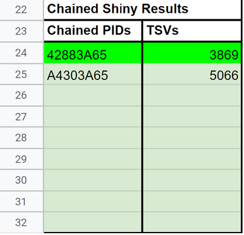As you can see, my Gyarados either has a PID of 42883A65, or A4303A65. However, If you completed the Pokewalker step of this guide, one of these 2-6 PIDs will be highlighted in lime green, since it matches the calculated Mini-TSV. My TSV for this file is 3869, though if I didn’t have a pokewalker pokemon (or Spiky-Eared Pichu) from my save file, 3869 or 5066 could be my TSV. I would then need to test each TSV value with a wild pokemon RNG, which will be covered in Part 3. Additionally, Part 3 will cover finding the individual SID value from a TSV.
This segment of the guide is broken down into segments that may or may not apply to you and your save file. Headbutt Trees To Exact SIDs is intended to be used for a HGSS save file which the player has access to, and with which the player has completed Part 1, Part 2, or both. Honey Trees to Exact SIDs is intended to be used for a DPPt save file which the player has access to, and has completed Part 2 with using a copy of HGSS. Square Shinies to Exact SIDs is intended to be used with any gen 4 game capable of transferring Pokemon to Sword and Shield, that has completed Part 1, Part 2, or both. Finally, Gen 4 IDs & More can be utilized to narrow down results further through the lens of finding which SIDs are likely and unlikely to have been obtained through casual play.
If you have not done so already, the first step of this process is to input your Trainer ID (TID), in the box beneath the chained shiny results on the User sheet.
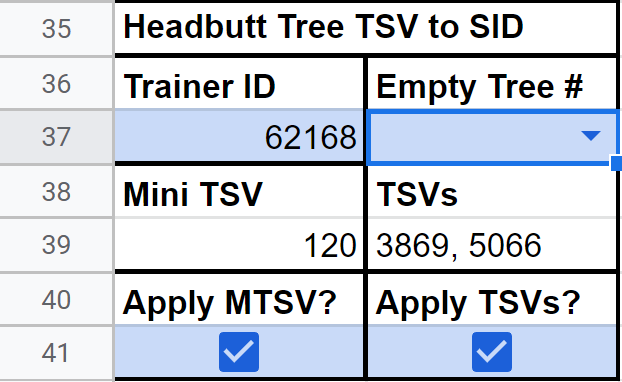If you completed Part 1, check the “Apply MTSV” box, and if you completed Part 2, check the “Apply TSVs” box. There is also an “Empty Tree #” box: The headbutt trees which contain pokemon can be utilized to find the SID of a player. Simply fly to Azalea Town, head right, and headbutt these 4 trees on Route 33. At least 3 of them will contain pokemon, but keep track of any trees that don’t.
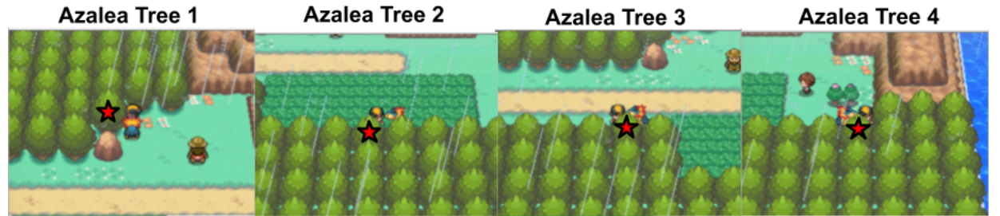It is possible that all 4 trees contain pokemon, but in my case, Tree 2 shown above was empty. And so, you should input which tree, if any (type “None” if all 4 trees have pokemon), is empty.
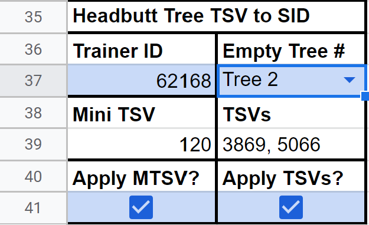Once you do, the box below, Headbutt Tree Results, will filter only the SIDs that match your tree results.
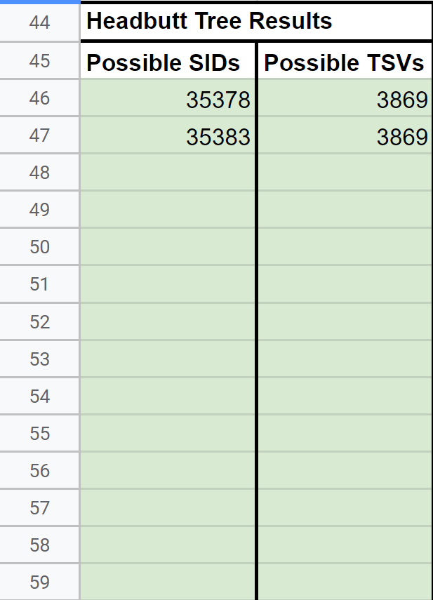Now, I can be certain that my SID is either 35378 or 35383, and that my TSV is 3869. Assuming you completed Part 1 and Part 2, you will be left with at most 2 possible SIDs in the same TSV. If multiple SIDs are still remaining, Square Shinies to Exact SIDs or Gen 4 IDs & More may help.
DISCLAIMER: This segment may not function perfectly: It is not extremely clear what happens when honey trees overlap, and how much they can overlap. This tool currently operates under the assumption that the range of possible trees is 1 to 4, though information on Bulbapedia and Cave of the Dragonflies contradicts this. These sources also contradict each other, so finding a clear answer has been difficult. That said, assuming no overlap happens, this tool should work as intended.
To the right of “Headbutt Tree TSV to SID” is a box for “Honey Tree TSV to SID”, which will be used for this process. If you have not done so already, the first step of this process is to input your Trainer ID (TID), in the TID box. Enable “Apply TSVs”, assuming you completed Part 2 of this process. A sinnoh game is unable to complete Part 1.
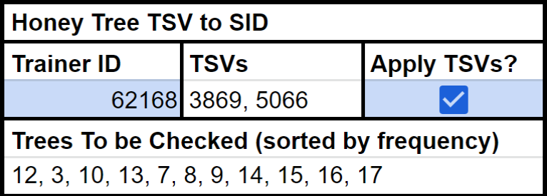After completing these steps, a numerical list of honey trees will be generated in the box directly below. These numbers correspond to honey trees around the region which based on your possible SIDs, likely contain munchlax. Cave of Dragonflies has a list of honey trees, index numbers, and instructions on how to reach said honey trees. To correctly identify SID in sinnoh, you must check each of these trees for munchlax, which at a 1% chance, would be a herculean task through normal means. I will not be covering the process of checking muchlax trees in detail, but Imablisy has a guide that can be used to RNG a munchlax in a tree. If you complete the process successfully and do not get munchlax, that tree is not a munchlax tree. Anyway, search every tree listed until you check every tree, or you locate two that contain munchlax.
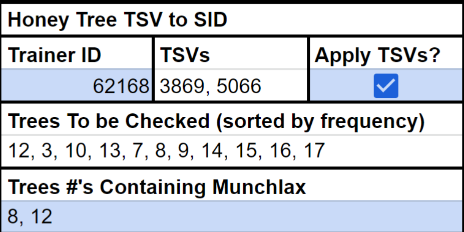I was able to find munchlax in tree 8 and 12, and input that information with a comma and space. If you could only locate one tree, only input the number of the tree you found. If you found three trees, my tool is broken. Anyway, after inputting the trees, you should see the remaining possible SIDs in the Honey Tree Results segment below.
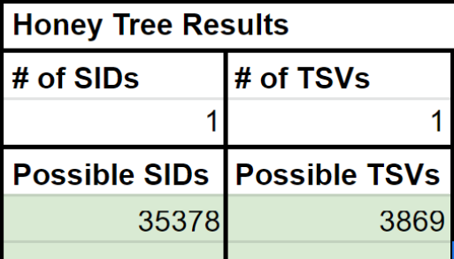My SID for this file MUST be 35378, though it is possible to have more than one match after this process. If multiple SIDs are still remaining, Square Shinies to Exact SIDs or Gen 4 IDs & More may help.
A detailed guide for this process is not yet written, but the premise is simple. Attempt to RNG a square shiny, transfer it to SWSH, and see if the Pokemon is actually a square shiny. If it is, you found your SID correctly. If it isn’t, your SID is incorrect. Complete this process with all remaining SIDs until you get a match. Might even be smartest to transfer all the unique “square shinies” at the same time to save time.
A detailed guide for this process is not yet written, but the premise is simple. Search for the remaining TID/SID pairs as if you were aiming to RNG them. Some TID/SID are more or less difficult to obtain than others (some even being impossible), and would require waiting obscene periods of time in the pregame dialogue to obtain. Pokefinder only permits searching one TID and SID at a time, but a dev version of a program known as “Gen4IDs” allows for searching multiple TIDs and SIDs at a time. This version, linked here, is only available for windows. Pokefinder is the next best option for any other OS. Simply search for your remaining possible combos, and conclude based on the relative delays of the results. (below 5,000 is near-impossible, above 35,000 is improbable unless you waited ~10 min on the pregame sequence. Above 65535 is unrealistic unless you started on hour 23, and waited 19+ min on the pregame sequence).
Thank you for reading my guide! Be sure to check out the various other gen 4 RNG guides, so you can actually make use of this SID finding process. RNG Abuse takes time to learn, but if you’re reading this, you’ve probably spent a few hours grinding juice already, and are motivated to actually RNG some shinies!
happylappy (Me)
thegreenkacheek (quality assurance)
Real.96 (researched headbutt trees, and explained the findings to me for this guide. Also, created a build of Gen4IDs capable of accepting multiple TIDs and SIDs) https://github.com/Real96/Gen4IDs/releases/tag/2.1
Psypokes (source for Pokeathlon species stats)
The Cave of the Dragonflies (Source for Honey Tree related info)
Imablisy (Created a video guide that can be used to locate munchlax trees)
AdmiralFish (created Pokefinder, Gen4IDs, and so much more)
Aprijuice to SID Sheet (Happylappy, Me)
Thank you for reading, I hope you succeed in getting your SID. If you have any questions feel free to ask me on Twitter @im_a_blisy or join my discord. https://discord.gg/QchhXQv If you speak another language other than English fluently, and would like to translate this guide, please, contact me and I'd love to help :D